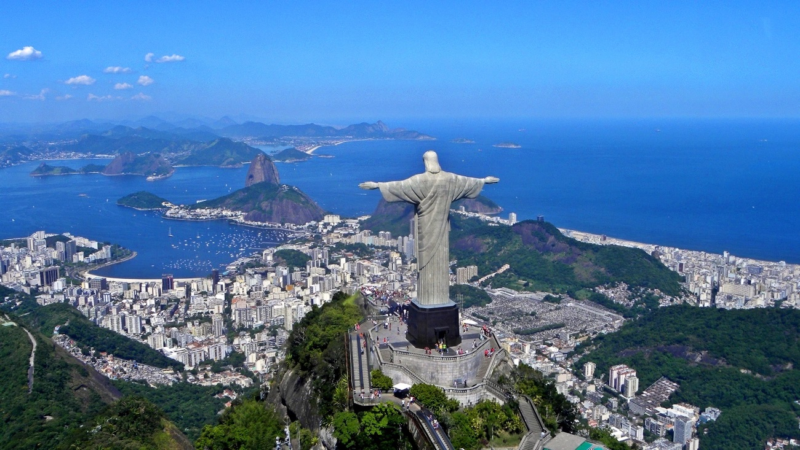
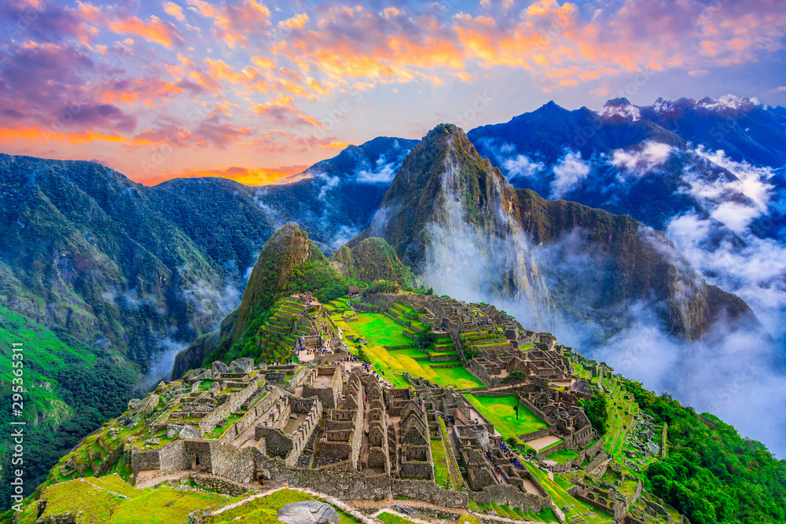
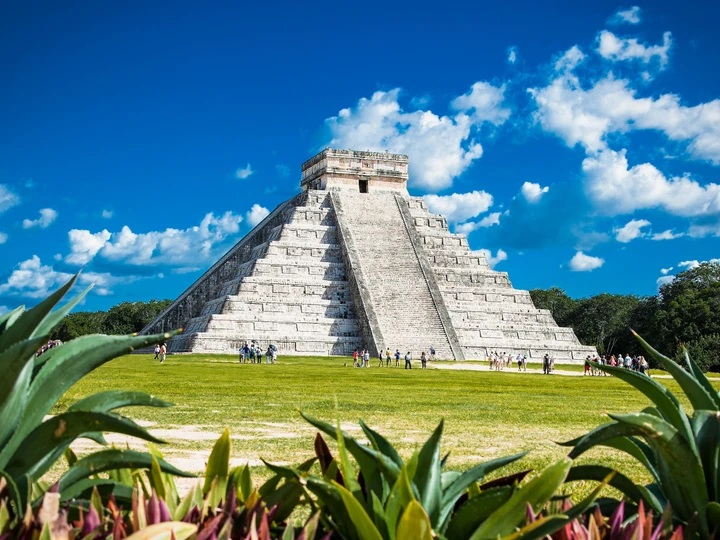
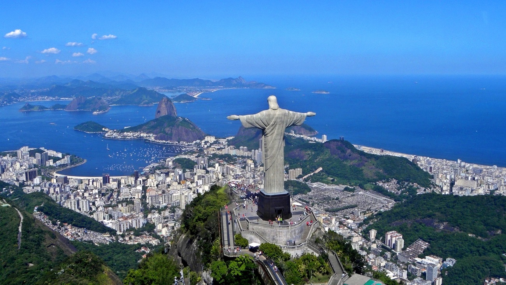
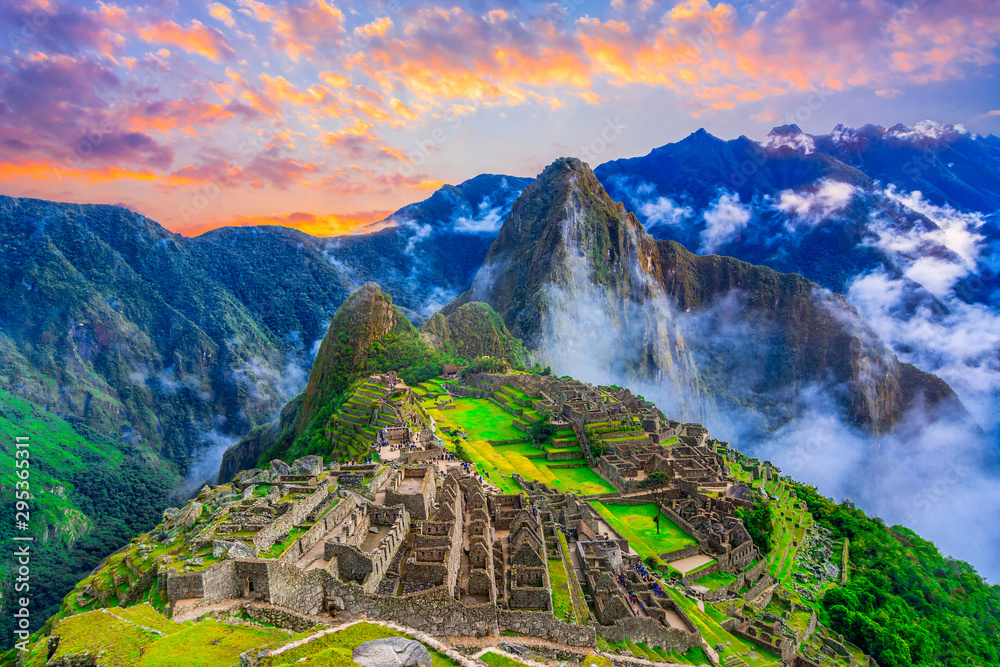
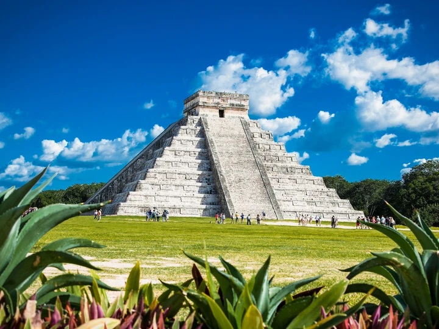
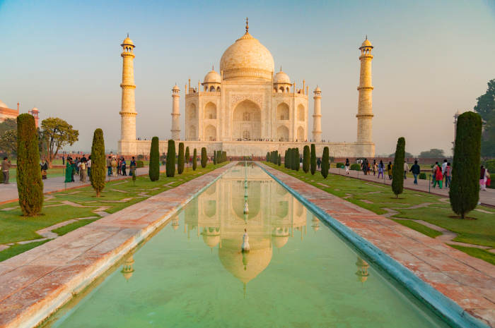
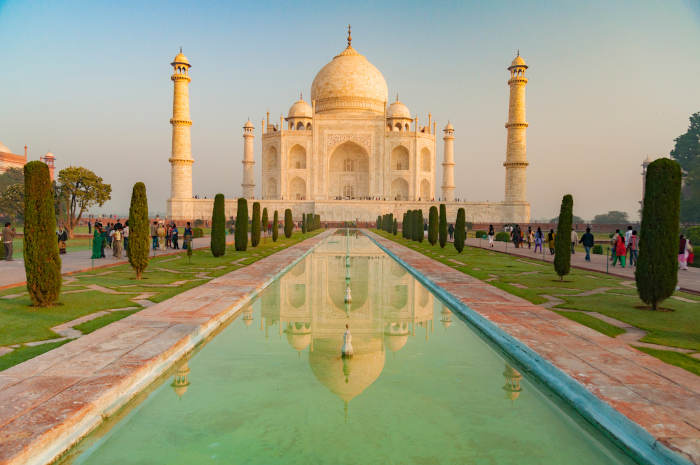

7 cudów świata
Na tej stronie poznasz siedem niezwykłych miejsc uznawanych za cuda świata. Znajdziesz tu krótkie opisy, galerię zdjęć, tabelę porównawczą oraz ankietę.
Dzięki wewnętrznym linkom szybko przejdziesz do wybranego działu, a linki zewnętrzne otworzą się w nowych kartach.
- Krótka charakterystyka każdego z cudów.
- Automatyczna galeria zdjęć w jednym rozmiarze.
- Formularz-ankieta z różnymi typami pól.
 





 
